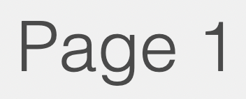
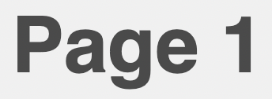
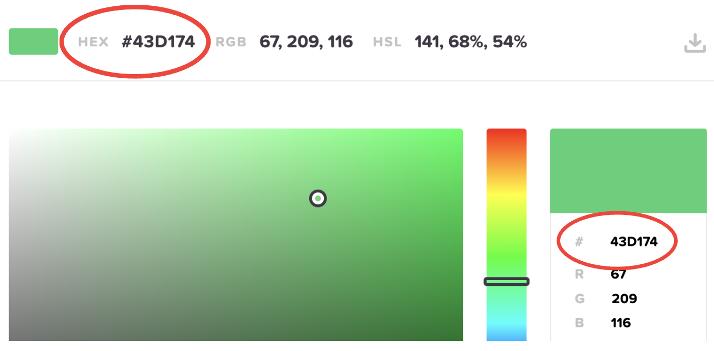
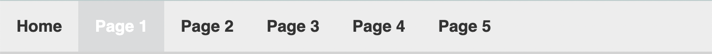
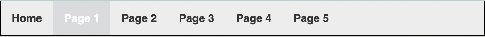
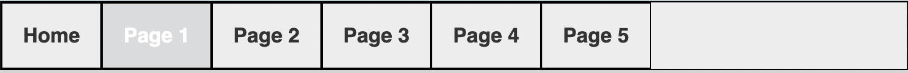
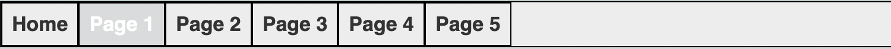
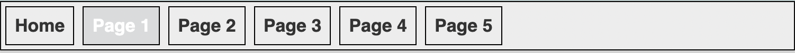

Stage 3: Stylize

Edit the CSS
Stylize helps you edit the CSS file and style your website. As we learned in the previous stage, HTML is used for the content. CSS is used to style that content. All of your HTML files are styled by the style.css file.
Prerequisites:
Elements
This is simply the HTML element to be styled. Elements can be attributes, ids, or classes. Some examples of elements that we will style are: h1, h2, p, links, divs, etc.
Properties
Properties are the styles used on specified elements. Some properties are universal and can be used on any type of element. Others only work on some elements under certain conditions. There are 3 common properties to work with: layout, color, and font/text.
Values
Values are written as a pair with their properties. They are written immediately after the colon that separates them from CSS properties. Values can be text, units, measurements, URLs, integers, colors, etc.
LAYOUT
| Property | Description | Value |
| padding | sets the amount of space around an element | px/em or percentage |
| margin | sets the margin around elements (top, right, bottom, left) | px/em or percentage |
| display | sets the layout of an element | inline, block, table, etc. |
| overflow | what should happen if content overflows in an element's box | visible, hidden | border | sets the type of border | solid, dashed, dotted, etc. | border-width | sets the width or weight of a border | px/em or percentage |
COLOR
| Property | Description | Value |
| color | sets the color | hex, RGB, keyword |
| background-color | sets the background color | hex, RGB, keyword |
| border-color | sets the border color | hex, RGB, keyword |
FONT/TEXT
| Property | Description | Value |
| font-family | sets the font type | family-name, generic-family, inital, inherit |
| font-size | sets the font size | px/em |
| font-weight | sets the font weight | normal, bold, light (or increments of 100) |
| font-style | sets the font style | normal, italic, oblique |
| text-align | sets the alignment of the text | right, left, center |
| letter-spacing | sets the spacing between text characters | normal, px/em, or percentage |
| line-height | sets the distance between lines of text | px/em or percentage |
Comments
Surround your comments in CSS with a pair of asterisks, followed by a pair of forward
slashes. For example: /* This is a comment. */
Classes
While most CSS elements are coded exactly how they appear in HTML (h1, h2, p, body, table, etc.) elements that are classes must be coded after a period. For example:
.column {}
.row {}
Curly brackets and colons
Each CSS element is followed by a set of curly brackets that contain each property and
value. The property is followed by a colon, and the value is followed by a semicolon (before you skip a line). Items inside of the curly brackets are also nested, or indented. For example:
h1 {
property: value;
property: value;
property: value;
}
Steps:
The current background image is a plain gray color. However, you should choose a different image that you like. The background can be a solid color, like it is now, or it can be a simple image. Follow either set of instructions below, depending on what you’d like.
Option 1: solid color background
1. Pick out a background color at this HTML Color Codes website.
2. Take note of the hex (hexadecimal value) of the color. This is usually a pound sign (#) followed by a series of 6 numbers and letters.
3. Open the style.css file in VSCode.
4. Go to line 77 where the “html, body” element starts.
5. Change the hex value on line 84 to the color you chose. Right now, the background is a light gray color (#d3d3d3).
6. Save your changes by clicking File > Save or the Cmd + S keyboard shortcut. Then push and commit your changes to GitHub.
Option 2: background image
The image should have the dimensions of 1920 by 1080 pixels. In order to ensure responsive web design (the ability for the image to display on all types of devices), this option requires a few more steps.
1. Visit the Unsplash website. You can search for a type of color or pattern that you’re looking for in the search box. Most of the images can be downloaded for free.
2. Once you have a 1920 by 1080 pixels image downloaded on your local machine, add it to your index.media folder. (We could technically add it to any of the media folders, but let's stick to the index folder.)
3. Go to line 77 where the “html, body” element starts.
4. Right now, the code for a background image is commented out. Uncomment out lines 87-89. Then comment out the background color option on line 84.
5. Replace the {imagename} field with the actual name of your background image. Change the image extension (png), if applicable.
6. Save your changes by clicking File > Save or the Cmd + S keyboard shortcut. Then push and commit your changes to GitHub.
Fonts play a large role in the overall visual appeal of a website. A great web font should be readable and web-safe. Web-safe fonts are fonts that come pre-installed across all operating systems. Most
popular examples of web-safe fonts include Arial, Times New Roman, and Helvetica. This website uses Helvetica (sans-serif) as the universal font.
1. Go to the W3C website with the comprehensive list of web-safe fonts.
2. Browse the different font families and take note of your favorite ones.
3. Open the style.css file and navigate to your h1 element.
4. The current value in the stylesheet for all fonts is helvetica, sans-serif. Change the font-family property’s value for h1 to the font-family you chose from the W3C website.
5. Repeat the previous step with the h2, p, nav, a, and topnav elements in style.css.
6. Save your changes by clicking File > Save or the Cmd + S keyboard shortcut. Then push and commit your changes to GitHub.
Let’s experiment with changing the text. You can change the text size, style, and weight. You can also change the text color, but we’ll do that in the next section. The CSS elements that have text in your style.css file are: h1, h2, p, hav, and topnav.
1. First, open one of your HTML files to view it on your local system. Notice the things
you like about how the text is styled, and what you don’t. It’s your website, so making
changes to the style is totally up to you. Feel free to leave the CSS file unedited if you
like how it looks now.
2. Go to the h1 element on line 123 in the style.css file. Change the font-weight property’s value on line 125 to make the text heavier or lighter. For example, if you increase the value to 600, the h1 will be a lot bolder.
300 weight h1:

600 weight h1:

3. On line 126, the font-style property is used to make the font bold or italic. Change the value if you’d like.
4. On line 126, increase or decrease the font-size property value, if you’d like.
5. Repeat steps 1-4 for the h2, p, nav, and topnav properties.
6. Save your changes by clicking File > Save or the Cmd + S keyboard shortcut. Then push and commit your changes to GitHub.
There are many elements in the style.css file that have color: text, link boxes, borders, the navigation bar, the center div, and the background.
The property for color in CSS is simply called, “color.” Refer to this HTML Color Codes website to obtain the hexadecimal value of a font. The hex is usually a pound sign (#) followed by a series of 6 numbers and letters.

1. There are many things we can edit with color, but let’s start with the center div (where the main body of your content lives). In the style.css file, go to line 97 where the background property is. The current value is #ffffff, which is white. Change this color to a different hex value of your choosing, from the HTML Color Codes website.
2. On line 98, a property called opacity controls the transparency of the color. As of now, this value is set to .65. This is the same as saying 65%. Change this value to 100% and view the change on your local machine. The color of the center div should appear much more solidified.
3. Change the opacity value of the center div back to .65, or whatever value of your choosing.
4. Continue experimenting with color and opacity within the other elements. Repeat the color-changing step with elements like h1, h2, p, topnav, a, and more. The comments in the style.css file will guide you about what each element does.
5. Save your changes by clicking File > Save or the Cmd + S keyboard shortcut. Then push and commit your changes to GitHub.
Some layout properties include padding, margin, and borders (refer back to the prerequisite in this section: Elements, properties, and values).
1. Let’s start experimenting with layouts with our top navigation bar. Here’s what it’s layout should look like, as of now:

Go to line 178, where the .topnav class element lives in the style.css file. Add the following two lines of code after the overflow property:border: solid black;
border-width: 1px;
Now the element should have 4 properties.
Save and view the change on your local device. We just added a solid border around the navigation bar. You should see something like this:

2. Go to the .topnav a element (style the links inside the top navigation bar). Add the same two lines from the previous step to this element, right after font-size (border and border-width).
Save and view the change on your local device. We just added borders around each link in the top navigation bar. You should see something like this:

3. In the same .topnav a element, decrease the padding property from 17px 17px to 8px 8px.
Save and view the change on your local device. This is decreasing the amount of space between the text and the border. You should see something like this:

4. In the same .topnav a element, add a new margin property after the border-width property that you added. Copy and paste this line of code into the element:
margin: 4px;
Save and view the change on your local device. This added a margin between the button and the actual navigation bar. You should see something like this:

5. Revert or keep the changes in this section, depending on your preferences. Now that you’ve experimented with different layout properties, feel free to add or change some of your other elements. It’s up to you!
6. Save your changes by clicking File > Save or the Cmd + S keyboard shortcut. Then push and commit your changes to GitHub.